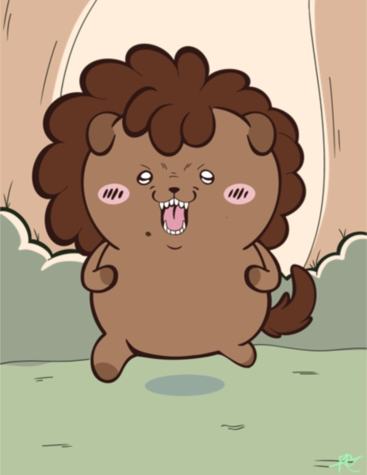

Within my artist journey, I’ve gone through phases of both success and failure when it comes to drawing and creating illustrations. Originally, I did not enjoy creating artwork until I began using drawing as a creative outlet. From then on, drawing became my way of self expression. I have developed my skills in sketching and digital illustration for about 14 years and I continue to grow my skills within my graphic design career. I mainly create character designs and illustrated pieces, but I have also made some tattoo designs, book covers, magazine covers etc. throughout my college career going into graphic design. Ideally, I would like to create character designs and illustrations for gaming developers in the future while also creating stickers and small merchandise of fan characters or my own original creations.